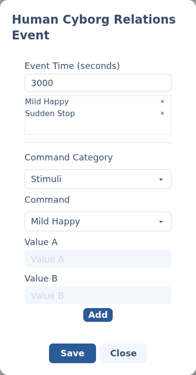

Audio events.
An audio event fires one or more sound commands to a Human Cyborg Relations (HCR) sound board — the vocalizer that gives your droid its voice, musings and emotional reactions.
§Add an audio event
Add a Human Cyborg Relations channel to your script (set the module up first under Other serial modules), then click its track at the time you want the sound to play. The HCR event editor opens.
§The editor
Unlike the other editors, one audio event can carry a list of commands that all fire at the same moment. You build that list with the fields below, then Save.

- Event Time (seconds) — where on the timeline the commands fire.
- Command Category — groups the available commands: Stimuli (emotional reactions), Muse (idle chatter), SD Wav (play files from the HCR's SD card), Stop, Volume and Override (personality tuning).
- Command — the specific HCR command within the chosen category.
- Value A / Value B — numeric arguments. They enable only for commands that take a value (for example, a WAV file number or a volume level); for the rest they stay disabled.
Select Add to append the command to the list at the top of the editor. Repeat to stack several commands into one event; use the ✕ beside a listed command to remove it. When the list looks right, select Save.
The dropdown lists commands by friendly name (Mild Happy, Enable Muse, Play Wav on A…); each one sends the HCR's matching serial instruction. The commands that take a Value A are the ones that need a number — a WAV file to play, a volume level, a delay in seconds. See the HCR documentation for what each does.
Back to Scripting animations.